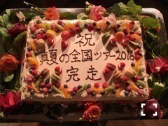
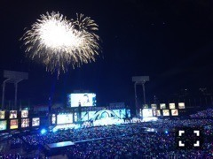

| 2016/08 31 Wed | ステージを駆け抜ける幸せったらない。736回目 |

真夏の全国ツアー2016
4th YEAR BIRTHDAY LIVE
完走しました！
改めて、乃木坂46デビュー4歳と
結成5周年おめでとう＼(^o^)／
神宮球場の３日間。
台風が直撃という予報に
はらはらしていましたが、
３日間とも無事開催。
最後にしっかり花火が上がりました。

雨が激しい時に歌った
他の星から
僕が行かなきゃ誰が行くんだ？
初披露だった
環状六号線
行くあてのない僕たち
が印象的です。
３日間それぞれ、思い入れのある曲を
披露することができてよかった。
でも見せ場が多かったのは2日目かなあ
生まれたままでをオリジナル衣装で
歌えたことが個人的に嬉しかった。
ここにいる理由も咄嗟も特別。
ファーストから順番に組んでいる
セットリストなので、
グループの歴史や自分自身の変化、
あの時その時のシーンが頭の中に
溢れ出てきてね。
嬉しかったとか楽しかったとか
感慨深いとしみじみしたり
悔しかったの思い出して
今更悔しがったり、
いろんな感情になりました。
今年はだいぶお待たせしてしまいましたが
あんなに素敵な景色を３日連続で
見られたのは一生の思い出です。
本当に綺麗だった。
心残りなところもあります。
それは次の課題に。
しかし今回もとても楽しんだ！
自分はこうであるって決めつけるのは
違うかもしれないけど
こうありたい自分を見つけ出すことが
できました。
考えても考えてもやっぱり
前向きでいることと楽しむことが
勝つんだな、私の場合は。

来てくださったみなさん
ありがとうございました。
歓声が本当に嬉しくって調子乗った。
水溜り蹴ってしまった。
団扇もタオルもペンライトも
とっても嬉しかったです。
スタッフのみなさん
メンバーのみんな
本当に本当にお疲れ様でした、、、
ありがとうございました！！！！
9月は中国地方でアンダーライブ、
そして10月は舞台！
いっぱい動けるというのはしあわせです。
お知らせしたいことあるのも
とてもしあわせです。
乃木坂46は、もっともっと上にいきます。
追いつきたい。
これからも応援よろしくお願いします。
まりか
コメント(749)
2016/08/31 23:36